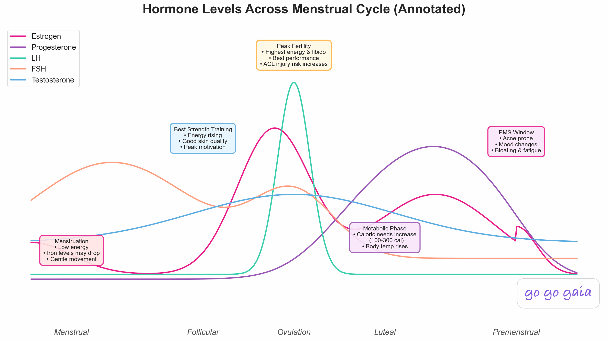

Best Egg Freezing Tracking App 2026: 6 Apps Compared

For a dedicated egg freezing tracker, try Berry Fertility, which lists egg freezing among its supported journeys. Viva Fertility is a free option with an AI assistant, Glow offers community, Flo and Ovia suit general cycle tracking, and Veya covers the symptom, mood, sleep, and wearable side of your cycle. If you're still deciding, the egg freezing clinic visit guide lists the questions to bring.
Quick Answer: Best App for Egg Freezing?
There's no single right egg freezing app, because it depends on what you need most. Here's how all six compare:
- For a dedicated tracker: Berry Fertility. Egg freezing among its journeys, camera-based medication scanning, stim dates in the calendar, mature follicles chart[7]
- For a free AI-first option: Viva Fertility. Eggion AI assistant for egg freezing and IVF questions, plus clinic comparison tools[8]
- For community during your cycle: Glow. A large user community and forums[9]
- For general fertility users adding a cycle: Flo. Widely used, familiar interface if you already track with Flo[10]
- For symptom and mood logging: Ovia Fertility. Symptom and mood logging with pattern insights[11]
- For the symptom + lifestyle side of your cycle: Veya. Daily symptom, mood, sleep, and nutrition tracking alongside wearable data, doctor-ready export[12]
Egg freezing involves roughly 10 to 12 days of daily injections[14], frequent monitoring appointments, and side effects that are hard to predict. Here's how 6 apps handle the medication, symptom, and emotional tracking side of an egg freezing cycle.
Full Transparency
This guide is published by Holland Neurotech Inc., the company behind Veya. Veya tracks the symptom, mood, sleep, nutrition, and wearable side of an egg freezing cycle. It is not a treatment-protocol app, so dedicated trackers like Berry Fertility may be a better fit if your priority is medication scanning, EMR integration, or care-path templates.
Our goal is to help you find what actually works during your cycle, whether that's Veya, another app, or a combination.
How We Compared
To compare these 6 egg freezing tracking apps, we checked each one against the same checklist: dedicated egg freezing support, medication reminders, side effect logging, privacy practices, and free-tier pricing. For each app we reviewed its current App Store listing, published pricing, privacy policy, and recent user reviews. Veya is our own app; we held it to the same checklist and note where competitors are stronger.
Last reviewed: October 9, 2026
How We Picked These Apps
We shortlisted the 6 apps compared below from what women actually use to get through an egg freezing cycle, tracking medication reminders, monitoring appointments, and side effects alongside the emotional load of stim, and compared them on the criteria that matter most here: dedicated egg freezing support, medication reminders, side-effect logging, and privacy practices. Pricing was re-checked against each app's App Store listing in October 2026, and we checked each app's listing and website for the features and privacy statements described here (sources are linked inline).
Full disclosure: this site is published by Holland Neurotech Inc., the maker of Veya. The list isn't ranked — each app is presented as the fit for a specific need — we include our own app only where it genuinely belongs, and we say plainly when a competitor is the better choice.
SART data reported by Contemporary OB/GYN show egg freezing cycles at member clinics rising from 24,560 in 2021 to 29,803 in 2022, an increase of about 21%[1]. Egg freezing is a growing category in assisted reproductive technology, and there is still no single dominant app for it.
If you're freezing your eggs, you already know it's a lot. Stim medications at the same time every night. Frequent monitoring appointments. A trigger shot at a precise hour.
And in between, side effects that are hard to predict: bloating, mood swings, exhaustion, the emotional reality of doing something this medically intense.
A regular period tracker won't help. Your clinic portal handles the protocol but rarely captures how you actually feel. This guide compares 6 apps that try to fill that gap. Not sure an app is worth it in the first place? Here's what an app actually helps with during egg freezing.
Educational content, not medical advice. Egg freezing is a medical procedure. Always follow your fertility clinic's protocols and your reproductive endocrinologist's guidance.
What does tracking an egg freezing cycle involve?
An egg freezing cycle is its own thing. Not a natural cycle, not exactly the same as IVF (no transfer, no embryo development). The tracking needs reflect that.
Stim Phase Medication Tracking
The American Society for Reproductive Medicine describes daily self-administered injections for approximately 10 to 12 days to help more than one egg mature, with blood levels and ultrasounds to track how the ovaries respond.[14] Your clinic sets the exact medications and timing, including a trigger shot at a specific time before retrieval, which is a brief outpatient procedure under light anesthesia.[14]
Useful apps send reminders for each medication, let you log when you actually took it, and surface the trigger timing prominently so you don't miss it.
Monitoring Appointment Tracking
Monitoring appointments typically combine bloodwork (including estradiol) and ultrasounds[14], and your clinic decides how many you need. Having that data in one place across appointments lets you see your own trends, not just the latest result.
Side Effect and Symptom Logging
The HFEA notes that some women experience side effects from fertility drugs, usually mild.[15] People often describe bloating, mood changes, headaches, breast tenderness, and fatigue during stim. Tracking what you're feeling day to day gives you a record to share with your clinic and a personal log of what your body went through.
Ovarian hyperstimulation syndrome (OHSS) is a rare but possible complication of fertility drugs.[15] Your clinic will give you specific guidance on what to watch for and when to call. Tracking symptoms alongside your protocol gives you the data to bring to that conversation.
Emotional Tracking
Egg freezing is emotionally heavy in a way the medical timeline doesn't capture. The decision to freeze, the cost (one clinic marketplace estimates about $8,000 to $15,000 for the procedure, with medications often $3,000 to $6,000 more[2]), the daily injections, the uncertainty about future use, the hormonal effects on mood. Many people find that tracking mood alongside the cycle helps them recognize patterns and talk about it with a partner, friend, or therapist.
Recovery After Retrieval
Recovery after retrieval varies from person to person, and your clinic will tell you what to expect. Logging recovery alongside the cycle gives future you (or future cycles) a baseline.
Step 2: The 6 Apps Compared
For Dedicated Egg Freezing Tracking: Berry Fertility
A good fit if you want: A purpose-built fertility treatment tracker that lists egg freezing among its journeys, with camera-based medication scanning and features for stim cycles.[7]
Key Features
- Treatment journeys including egg freezing, IVF, IUI, and frozen embryo transfer[7]
- Camera-based medication scanning, per its release notes[7]
- Stim dates shown in the calendar, per its release notes[7]
- Mature follicles chart showing follicle count progression across monitoring appointments
- Lab result tracking
- How-to guidance for medications
- Calendar for appointments, dose times, and ultrasound dates
- Clinic EMR integration; Pinnacle Fertility, a network of 40+ clinics, announced a partnership in October 2024[17]
- Shared treatments, per its release notes[7]
- Symptom logging and lab result tracking
Strengths
- 4.9 App Store rating from 27 ratings as of October 2026[7]
- Its CEO has built software at GitHub, Google, and several startups[18]
- Medication scanning is a core feature for stim
- Egg freezing is named in its App Store subtitle, not just an afterthought tacked onto an IVF app
- Cross-platform (iOS and Android)
Limitations
- Smaller user base than larger fertility apps, with 27 App Store ratings[7]
- EMR integration only works at partner clinics. If your clinic isn't on their list, you keep the consumer features but lose the sync side
- No nutrition, fitness, or broader health tracking
- No wearable integration
- Premium subscription needed for the full feature set
- Built around treatment, not lifestyle, so it doesn't track how stim affects sleep, energy, or daily mood patterns the way a broader health app would
Who Should Choose This
- You want an app built specifically for fertility treatment cycles
- Medication management with camera-based scanning is your top priority
- Your clinic is a Berry partner and you want sync with their records
- You're anxious about self-injections and want how-to guidance
- You want partner sharing so they can follow along with your cycle
Pricing: Free to download. The US App Store listing shows Premium at $12.99/month or $99.99/year as of October 2026[7].
Download: Available on iOS and Android
For Free AI-First Tracking: Viva Fertility
A good fit if you want: A free app with an AI assistant marketed for egg freezing and IVF questions.[8]
Key Features
- "Eggion" AI fertility assistant, marketed by Viva as built for answers about egg freezing and IVF
- Centralized tracking for appointments, medications, and notes with smart reminders
- Clinician-reviewed educational courses covering fertility preservation and emotional wellness
- Clinic comparison tools to evaluate fertility clinics and understand treatment costs
- Personalization (the app states it learns user preferences over time)
Strengths
- Free, with no in-app purchases listed on its App Store page[8]
- The AI assistant (Eggion) is positioned around egg freezing and IVF questions
- Clinic comparison tools can be useful if you're still deciding where to freeze[8]
Limitations
- Very new app. Only 4 App Store ratings as of October 2026, so the 5.0 average isn't meaningful yet[8]
- iOS only
- Smaller feature set than mature trackers. No camera-based scanning, no EMR integration, no follicle/hormone charts
- AI quality and persistence are unverified in long-term use, given how new the app is
- No partner sharing
- Limited symptom logging compared to Berry or Ovia
Who Should Choose This
- You're still in the research phase and want clinic comparison tools alongside tracking
- You want a free, lightweight option without a subscription
- You're comfortable being an early adopter of a newer app
- You don't need EMR integration or advanced clinical features
Pricing: Free.
Download: Available on iOS
For Community During Your Cycle: Glow
A good fit if you want: A large user community and forums while you go through stim.[9]
Key Features
- Cycle and ovulation tracking, described in its listing as an aid for conception rather than contraception[9]
- Community support from a large group of users[9]
- Cycle syncing with friends, per its release notes[9]
- Medication logging
- Appointment tracking
- Cycle reports and statistics
Strengths
- A large community. Useful if you want to hear from people doing or having done the same cycle
- Cycle syncing lets friends follow along
- A large user base, so you may find people who've been through similar cycles
- Cross-platform (iOS and Android)
Limitations
- A security researcher reported a vulnerability in a Glow developer API that could expose data for around 25 million users, and Glow patched it about a week after the report (TechCrunch, February 2024)[3]. Earlier, the California Attorney General announced a settlement with Glow in September 2020 that included a $250,000 civil penalty over privacy and security failures[4]
- Egg freezing isn't a dedicated mode. We didn't find stim-specific features in its listing
- Premium features sit behind a Glow Premium subscription; the US listing shows options from $15.99 to $69.99 as of October 2026[9]
- No nutrition or broader health tracking
- No wearable integration
Who Should Choose This
- Community and peer support during your cycle is a top priority
- You want to sync cycles with friends
- You're comfortable with Glow's privacy practices after the 2024 vulnerability report
- You want a general fertility app and don't need a dedicated egg freezing mode
Pricing: Free to download. Glow Premium is sold by subscription, with US listing prices from $15.99 to $69.99 as of October 2026[9].
Download: Available on iOS and Android
For Familiar Tracking If You Already Use Flo: Flo
A good fit if you want: Continuity with the app you already use for cycle tracking, with educational content layered on top.
Key Features
- Over 570 million downloads worldwide, per its App Store listing[10]
- Anonymous Mode, per its listing[10]
- Cycle tracking and symptom logging
- Extensive content library on cycle and fertility topics
- Widely used, so many people are familiar with it
Strengths
- Familiar if you already track your cycle with Flo, no learning curve
- Content library can serve as a research tool
- Cycle tracking and symptom logging in one familiar app
- Cross-platform
Limitations
- No dedicated egg freezing mode. The app is built around natural cycles, and stim cycles don't fit the prediction model
- Privacy history: the FTC alleged in 2021 that Flo shared health data with Facebook and Google and others[5], and finalized an order requiring an independent privacy review[19]. A separate $59.5M class settlement with Flo, Google and Flurry received preliminary approval in April 2026, with a final approval hearing set for October 29, 2026[6]. Anonymous Mode was added since, but the history is worth knowing for sensitive treatment data
- Many features sit behind Flo Premium; the US listing shows several paid options as of October 2026[10], which adds up if you're already paying for treatment
- Symptom logging is broad but not stim-specific
- No injectable-medication reminders that we could find
- No follicle or hormone charts
Who Should Choose This
- You already use Flo and want to keep tracking in one place
- You value the content library as a research tool more than the tracking itself
- You're comfortable with Flo's privacy history
- You're planning to use a dedicated app for the medical side and want Flo as the content layer
Pricing: Free to download with paid Flo Premium options; see the App Store listing[10] for current prices (as of October 2026).
Download: Available on iOS and Android
For Detailed Symptom Logging: Ovia Fertility
A good fit if you want: Symptom and mood tracking with pattern insights.[11]
Key Features
- Symptom and mood tracking[11]
- Pattern insights based on your logged cycle history[11]
- Fertility window tracking[11]
- Cycle tracking history that builds over time
- Cycle tracking and appointment logging
- Free to download, with All Access plans[11]
Strengths
- Symptom and mood logging can capture the day-to-day reality of a stim cycle
- Free to download
- Pattern history for data-oriented users
Limitations
- No dedicated egg freezing mode. Stim cycle has to be tracked manually around the natural cycle assumptions
- Employer programs. A 2019 report described employers paying for a version that gives HR staff de-identified, aggregated data; Ovia said its contracts prohibit re-identification and that it does not sell data to third parties[16]
- No camera-based medication scanning or EMR integration
- No medication how-to guidance that we could find
- Limited dedicated egg freezing content
Who Should Choose This
- You want symptom and mood tracking and don't mind the lack of a dedicated egg freezing mode
- You want to try a free download first
- You're already comfortable using Ovia for cycle tracking
- You're aware of the employer data-sharing model and comfortable with it
Pricing: Free to download. The US listing shows All Access at $4.99/month or $24.99/year as of October 2026[11].
Download: Available on iOS and Android
For the Symptom + Lifestyle Side of Your Cycle: Veya
A good fit if you want: Daily symptom, mood, sleep, and nutrition tracking alongside wearable data during your cycle and after retrieval.
Key Features
- Daily symptom logging with 20+ trackable symptoms, including bloating, headaches, breast tenderness, sleep disruption, and fatigue
- Mood tracking with a 14-day daily check-in mode during the cycle
- Wearable integration with Apple Watch, Oura, and Garmin for automatic sleep, heart rate, and stress data
- Nutrition tracking, useful during stim when bloating and gut comfort affect food choices
- Medication and supplement logging with reminders
- Lab result tracking for hormone panels (estradiol, progesterone, AMH)
- Correlation insights showing how lifestyle factors connect to how you feel
- Doctor-ready data export to share with your fertility clinic
- Cycle tracking that picks back up naturally after your cycle ends
Strengths
- Covers the symptom and lifestyle side that dedicated treatment apps don't focus on
- Wearable data captures what you can't easily self-report: sleep quality changes during stim, heart rate variability shifts, recovery patterns after retrieval
- No data selling, per our privacy policy[13]
- Free core logging for symptoms, mood, and energy[12]
- Transitions back to cycle tracking after your cycle, so you don't need to switch apps when your period returns
Limitations
- Not a treatment-protocol app. No injection site rotation tracking, no camera-based medication scanning, no follicle-count chart
- No EMR integration with fertility clinics
- No partner sharing for treatment updates
- iOS only
- Full AI features require premium ($9.99/month or $49.99/year)
- Newer app with a smaller community than larger fertility apps
Who Should Choose This
- You want to track the symptom, mood, sleep, and nutrition side of your cycle, not just the medication protocol
- You wear an Apple Watch, Oura, or Garmin and want that data alongside your cycle
- You want a doctor-ready export to bring symptom and lifestyle context to your next appointment
- You don't need EMR integration or camera-based scanning
- You want one app that picks back up with cycle tracking after the cycle ends
Pricing: Free to download, with symptom, mood, and energy logging free[12]. Veya Pro is listed at $9.99/month or $49.99/year as of October 2026[12] for full AI insights. For a closer look at what the app tracks through a full IVF cycle, see our IVF tracking features.
Download: Available on iOS App Store
Worth Noting: Decision Tools, Reminder Apps, Clinic Platforms
A few adjacent tools come up often in egg freezing conversations but don't fit the comparison above. Worth knowing they exist:
For Research Before You Decide
FrzMyEggs is positioned as a decision aid rather than a tracker, which can help in the research phase before you commit to a cycle.
For Medication Reminders Only
Medisafe, Round Health, and MyTherapy are general medication reminder apps that come up often in fertility community conversations. Some people prefer them for stim shot reminders because they're optimized for medication timing and nothing else. The tradeoff: no fertility-specific context, no follicle tracking, no symptom logging. These work best as a companion to a fertility tracker, not a replacement.
Clinic and Financing Platforms (Not Consumer Trackers)
Cofertility runs an egg-freezing-via-donor-program model and publishes fertility content but does not ship a consumer tracking app. Future Family is a financing platform for fertility treatment with a web dashboard, not a mobile tracker. Kindbody is a national fertility clinic network with a patient portal but no standalone consumer tracker. Frame Fertility is a personalized coaching service with care coordinators, not an app. Worth knowing they exist if you're evaluating clinic-tied options, but they're not what you'd use to track your daily cycle.
Feature Comparison Table
Here's how the 6 apps stack up on features that matter most during an egg freezing cycle:
| Feature | Berry Fertility | Viva Fertility | Glow | Flo | Ovia | Veya |
|---|---|---|---|---|---|---|
| Dedicated Egg Freezing Mode | ✅ Listed journey | ✅ Eggion AI | ⚠️ Not a dedicated mode | ❌ Natural cycle only | ❌ Natural cycle only | ⚠️ Symptom + lifestyle side |
| Medication Reminders | ✅ With camera scan | ✅ Basic | ⚠️ Basic | ❌ | ⚠️ Basic | ✅ Custom |
| Injection Tutorials | ⚠️ How-to guidance | ❌ | ❌ | ❌ | ❌ | ❌ |
| Follicle/Hormone Charts | ✅ Mature follicles chart + labs | ❌ | ❌ | ❌ | ❌ | ✅ Lab tracking |
| Clinic EMR Integration | ✅ Partner clinics | ❌ | ❌ | ❌ | ❌ | ❌ |
| Side Effect Logging | ✅ Treatment-focused | ⚠️ Basic | ⚠️ Basic | ⚠️ General symptoms | ✅ Symptom + mood logging | ✅ 20+ symptoms |
| Mood / Emotional Tracking | ⚠️ Basic | ⚠️ Basic | ⚠️ Basic | ⚠️ Basic | ✅ Symptoms + moods | ✅ Detailed |
| Nutrition Tracking | ❌ | ❌ | ❌ | ❌ | Not listed | ✅ Free |
| Wearable Integration | ❌ | ❌ | ❌ | ❌ | ❌ | ✅ Apple Watch, Oura, Garmin |
| Partner Sharing | ⚠️ Shared treatments | ❌ | Not listed | ❌ | ❌ | ❌ |
| Community / Forums | ❌ | ❌ | ✅ Large community | ⚠️ Large user base | ⚠️ Smaller | ❌ |
| Privacy Practices | ⚠️ Check privacy policy | ⚠️ Check the privacy label | ⚠️ 2024 vulnerability + 2020 AG settlement | ⚠️ FTC order + class settlement pending | ⚠️ Employer programs | ✅ No data selling |
| Free Tier | ⚠️ Premium for full set | ✅ Free | ⚠️ Premium subscription | ⚠️ Premium subscription | ⚠️ Free + All Access | ✅ Free core logging |
| Platforms | iOS + Android | iOS only | iOS + Android | iOS + Android | iOS + Android | iOS only |
| Best For | Dedicated tracking | Free AI-first | Community | Existing Flo users | Detailed symptoms | Symptom + lifestyle |
Which egg freezing app should you choose?
Here's the bottom line for each app:
Choose Berry Fertility if:
- You want a dedicated tracker that lists egg freezing among its journeys
- Camera-based medication scanning is your top priority for stim
- Your clinic is a Berry partner (check their website)
- Guidance on medications would help ease your anxiety
- You want shared treatments during your cycle
Choose Viva Fertility if:
- You're still in the research phase and want clinic comparison tools
- You want a free app with no subscription
- You're comfortable being an early adopter of a newer app
- You like AI assistant features for getting quick answers
Choose Glow if:
- Community and peer support during your cycle is a top priority
- You want to sync cycles with friends
- You're comfortable with Glow's privacy practices after the 2024 vulnerability report
Choose Flo if:
- You already use Flo and want to keep tracking in one place
- You value the content library as a research tool
- You're comfortable with Flo's privacy history
- You're planning to pair Flo with a dedicated tracker for the medical side
Choose Ovia Fertility if:
- You want symptom and mood tracking in a general fertility app
- You want to try a free download first
- You're aware of the employer data-sharing model and comfortable with it
Choose Veya if:
- You want to track the symptom, mood, sleep, and nutrition side of your cycle, not just the protocol
- You wear an Apple Watch, Oura, or Garmin and want that data alongside your cycle
- You want a doctor-ready export of symptom and lifestyle context
- You want one app that picks back up with cycle tracking after your cycle ends
Consider Using Two Apps
One approach during an egg freezing cycle is to use one app for the medical protocol (like Berry Fertility for medication scanning and EMR sync) and a second for the symptom and lifestyle side (like Veya for daily mood, sleep, wearable data, and nutrition). Treatment apps and symptom and lifestyle apps often cover different ground. Pairing the two gives you a fuller picture than either one alone.
How do these apps handle your egg freezing data?
Egg freezing data is extremely sensitive: treatment details, financial information, hormone levels, and a record of a decision many people aren't ready to share publicly. Here's how each app handles it:
- Berry Fertility integrates with clinic EMR systems, according to its partnership announcement[17]. We have not reviewed its privacy policy, so read it before you sign up.
- Viva Fertility is new, with 4 App Store ratings as of October 2026[8]. Check the privacy label on its listing before you sign up.
- Glow had a vulnerability reported in 2024[3] and a 2020 California Attorney General settlement[4]. Worth careful consideration before signing up.
- Flo: the FTC alleged in 2021 that it shared health data with Facebook and Google[5], and a $59.5M class settlement has a final approval hearing on October 29, 2026[6]. Anonymous Mode was added since.
- Ovia offers employer programs that give HR staff de-identified, aggregated data, per a 2019 report[16]. Read its current privacy policy before signing up.
- Veya's privacy policy states that we never sell your data[13].
How should you track during an egg freezing cycle?
- Set up medication reminders before your cycle starts. Enter every medication with its time before day one so reminders are ready to go. The first few days of stim are a lot, and the last thing you want is to be setting up reminders while also doing your first injection.
- Ask your clinic how they want injection sites handled. If your app supports it, a quick note in the daily log works fine.
- Write down lab results right away. Your clinic will call with estradiol numbers and follicle counts. Log them immediately. Over several monitoring appointments, having a running record is more useful than trying to remember.
- Track how you actually feel, not just what you took. Bloating, mood, sleep, energy. These are real data points for your clinic and a personal record of what your body went through.
- Don't compare your numbers to others. Forums are full of follicle count comparisons. Your numbers are your numbers. Focus on your own trend across appointments.
- Keep tracking after retrieval. Recovery is its own phase. Tracking how recovery actually goes gives you a baseline if you do future cycles.
- Capture the emotional side, not just the medical one. Many people describe the days around retrieval and the first period afterward as emotionally heavy. A daily mood log gives you something to look back on and patterns to share with a partner or therapist.
Frequently Asked Questions
Is there an app specifically for egg freezing?
Sort of. Berry Fertility lists egg freezing among its journeys, with camera-based medication scanning, stim dates in the calendar, and a mature follicles chart. Viva Fertility markets its Eggion AI assistant specifically for egg freezing decisions and tracking. Most other dedicated fertility trackers cover egg freezing alongside IVF and IUI. There is no single app that dominates egg freezing alone.
What should I track during an egg freezing cycle?
Most people track medication timing for stim shots and the trigger, monitoring appointments and bloodwork results, follicle counts from ultrasounds, daily side effects like bloating or mood changes, and recovery after the retrieval. Tracking the symptom side alongside the medical protocol gives you a fuller picture to share with your fertility clinic.
Can I use a regular period tracker for egg freezing?
A regular period tracker isn't designed for a stim cycle. Egg freezing involves controlled ovarian stimulation with daily injectable medications, monitoring every few days, a trigger shot at a precise time, and a retrieval procedure. None of that follows a natural cycle. A dedicated fertility treatment tracker or an all-in-one health tracker with medication and symptom logging will be more useful during your cycle.
How many people freeze their eggs each year?
SART data reported by Contemporary OB/GYN show egg freezing cycles at member clinics rising from 24,560 in 2021 to 29,803 in 2022, an increase of about 21%. Egg freezing is a growing category, which is part of why there's no single dominant app for it yet.
Will an app replace my clinic's portal?
A tracking app doesn't replace your clinic's portal. Your fertility clinic's portal handles the medical protocol, prescriptions, lab results, and care team communication. A tracking app sits alongside that, focused on the day-to-day experience: medication reminders, side effect logging, mood tracking, and a personal record of your cycle that the portal doesn't capture.
Are egg freezing tracking apps free?
Most have a free tier and several charge for premium. Berry Fertility is free to download, with Premium listed at $12.99/month or $99.99/year as of October 2026. Viva Fertility is free. Flo, Glow, and Ovia are free to download with paid subscriptions. Veya is free for core features with optional premium at $9.99/month or $49.99/year.
Should I track my emotional side or just the medical one?
Both, if you can. The medical side gives you data for your clinic. The emotional side gives you a record of how you actually experienced the cycle. Many people find the emotional log more valuable in hindsight than they expected, especially if they do future cycles.
Final Thoughts
Egg freezing is a medically intense process, and the right app depends on what part of the experience you most want help managing.
If you want a dedicated tracker, Berry Fertility lists egg freezing among its journeys, with camera-based medication scanning, stim dates in the calendar, and EMR integration where your clinic is a partner. If you want a free AI-first option and clinic comparison tools, Viva Fertility is worth trying. If community support during your cycle matters most, Glow has active fertility forums. If you already use Flo or Ovia and want continuity, both can layer onto your cycle, but neither has an egg freezing mode. And if you want to track the symptom, mood, sleep, and lifestyle side of your cycle alongside wearable data, Veya handles the part dedicated treatment apps don't focus on.
A lot of people end up using two apps during their cycle: one for the medical protocol and one for the symptom and lifestyle side. That's a perfectly good approach. The important thing is keeping yourself organized and giving your future self a record you'll be glad to have.
Track the Symptom Side of Your Cycle
Your clinic's portal handles the protocol. The day-to-day experience of stim, the bloating, mood, sleep changes, and how you actually feel, is what you bring to your next appointment. Veya tracks symptoms, mood, sleep, nutrition, and wearable data alongside your cycle.
Start a Daily Symptom LogFree to start. Logging takes a few seconds a day.
Related Articles
- Best IVF Tracking App 2026: 5 Apps Compared
- Best Fertility Tracking App 2026: 8 Apps Compared for TTC
- Best Ovulation Tracker App 2026: 5 Apps Compared
- Best Period Tracker App 2026: 6 Apps Compared
Other App Comparisons
- Best Pregnancy App 2026: 6 Apps Compared
- Best PCOS Tracking App 2026: 7 Apps Compared
- Best Endometriosis App 2026: 7 Apps Compared
Still deciding? Pick one. Track it for the first week of stim. You'll know fast whether it's the one you want to keep using.